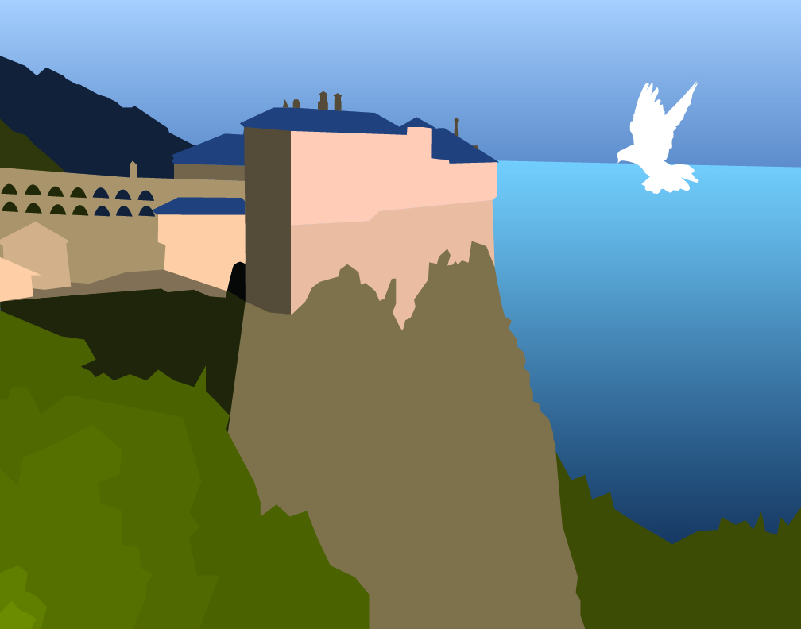

TAG
- Tell the artist something you like
- Foreground Image
- Ask the artist a question
- The landscape is pretty
- Give the artist a suggestion
- Using a lighter shade of green
Final result

Progress


TAG2
- Tell the artist something you like
- The building
- Ask the artist a question
- Why did you make so many trees? Because it looked cool.
- Give the artist a suggestion
- Do the front side of the building
artist's statement
This is a tonal drawing of Mt. Athos. The work is untitled. The subject mater is one of the monasteries at Mt. Athos and a dove.
I used Adobe Illustrator to make this piece as well as a computer. I used many layers to get a 3d feel. I used gradients to do the sky and the water.
I attempted to use shading on the sides of the structure. The big idea of my picture is to show the beauty of Mt. Athos. My goals were to create a detailed
drawing of Mt. Athos. I could not complete the front face of the monastery because it was was very complicated. I learned that trying to do a tonal drawing of
12th century architecture is very difficult.
- Tell the artist something you like
- The building
- Ask the artist a question
- Why did you make so many trees? Because it looked cool.
- Give the artist a suggestion
- Do the front side of the building
artist's statement
This is a tonal drawing of Mt. Athos. The work is untitled. The subject mater is one of the monasteries at Mt. Athos and a dove. I used Adobe Illustrator to make this piece as well as a computer. I used many layers to get a 3d feel. I used gradients to do the sky and the water. I attempted to use shading on the sides of the structure. The big idea of my picture is to show the beauty of Mt. Athos. My goals were to create a detailed drawing of Mt. Athos. I could not complete the front face of the monastery because it was was very complicated. I learned that trying to do a tonal drawing of 12th century architecture is very difficult.